%%capture
!pip install kornia
!pip install kornia-rsImage histogram and equalizations techniques
Basic
Color spaces
kornia.enhance
In this tutorial we are going to learn how using kornia components and Matplotlib we can visualize image histograms and later use kornia functionality to equalize images in batch and using the gpu.

Install Kornia
Prepare the data
The low contrast color image used in this tutorial can be downloaded here (By Biem (Own work) [Public domain], via Wikimedia Commons)
import io
import requests
def download_image(url: str, filename: str = "") -> str:
filename = url.split("/")[-1] if len(filename) == 0 else filename
# Download
bytesio = io.BytesIO(requests.get(url).content)
# Save file
with open(filename, "wb") as outfile:
outfile.write(bytesio.getbuffer())
return filename
download_image("https://github.com/cvg/SOLD2/raw/main/assets/images/terrace0.JPG")
download_image("https://github.com/kornia/data/raw/main/soccer.jpg")
download_image("https://github.com/kornia/data/raw/main/mountains.jpg")'mountains.jpg'from typing import List, Tuple
import cv2
import kornia as K
import numpy as np
import torch
import torchvision
from matplotlib import pyplot as pltImage show functionality
def imshow(input: torch.Tensor, height: int, width: int):
out: torch.Tensor = torchvision.utils.make_grid(input, nrow=2)
out_np: np.array = K.utils.tensor_to_image(out)
plt.figure(figsize=(height, width))
plt.imshow(out_np)
plt.axis("off");Image read functionality
def imread(data_path: str) -> torch.Tensor:
"""Utility function that load an image an convert to torch."""
img_t = K.io.load_image(data_path, K.io.ImageLoadType.RGB32)
img_t = K.geometry.resize(img_t, 1200, side="long", align_corners=True)[..., :600, :]
return img_t[None, ...]Image and histogram plot functionality
def histogram_img(img_t: torch.Tensor, size: Tuple[int, int] = (16, 4)):
CH, H, W = img_t.shape
img = K.utils.tensor_to_image(img_t.mul(255.0).byte())
plt.figure(figsize=size)
ax1 = plt.subplot(1, 2, 1)
ax2 = plt.subplot(1, 2, 2)
colors = ("b", "g", "r")
kwargs = dict(histtype="stepfilled", alpha=0.3, density=True, ec="k")
for i in range(CH):
img_vec = img[..., i].flatten()
ax2.hist(img_vec, range=(0, 255), bins=256, color=colors[i], **kwargs)
ax1.imshow(img, cmap=(None if CH > 1 else "gray"))
ax1.grid(False)
ax1.axis("off")
plt.show()Load the images in batch using OpenCV and show them as a grid.
img_rgb_list: List[torch.Tensor] = []
img_rgb_list.append(imread("terrace0.JPG"))
img_rgb_list.append(imread("mountains.jpg"))
img_rgb_list.append(imread("soccer.jpg"))
# cast to torch.Tensor
img_rgb: torch.Tensor = torch.cat(img_rgb_list, dim=0)
print(f"Image tensor shape: {img_rgb.shape}")
# Disable the line below to make everything happen in the GPU !
# img_rbg = img_rbg.cuda()
imshow(img_rgb, 10, 10) # plot grid !Image tensor shape: torch.Size([3, 3, 600, 1200])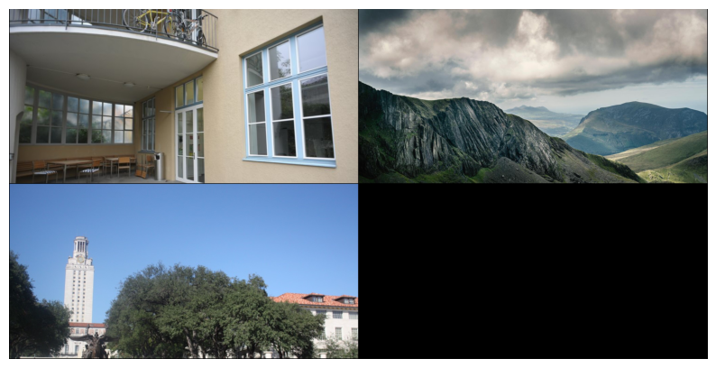
Image Histogram
Definition - An image histogram is a type of histogram that acts as a graphical representation of the tonal distribution in a digital image.[1] It plots the number of pixels for each tonal value. By looking at the histogram for a specific image a viewer will be able to judge the entire tonal distribution at a glance Read more - Wikipedia.
In short - An image histogram is: - It is a graphical representation of the intensity distribution of an image. - It quantifies the number of pixels for each intensity value considered.
See also OpenCV tutorial: https://docs.opencv.org/master/d4/d1b/tutorial_histogram_equalization.html
Lightness with Kornia
We first will compute the histogram of the lightness of the image. To do so, we compute first the color space Lab and take the first component known as luminance that reflects the lightness of the scene.
Notice that kornia Lab representation is in the range of [0, 100] and for convenience to plot the histogram we will normalize the image between [0, 1].
Note: kornia computes in batch, for convenience we show only one image result. That’s it - modify below the plot_indices variable to explore the results of the batch.
plot_indices: int = 0 # try: [0, 1, 2, 3]Tip: replace K.color.rgb_to_lab by K.color.rgb_to_grayscale to see the pixel distribution in the grayscale color space. Explore also kornia.color for more exotic color spaces.
img_lab: torch.Tensor = K.color.rgb_to_lab(img_rgb)
lightness: torch.Tensor = img_lab[..., :1, :, :] / 100.0 # L in lab is in range [0, 100]
histogram_img(lightness[plot_indices])RGB histogram with Kornia
Similar to above - you can just visualize the three (red, green, blue) channels pixel distribution.
- Tip - Use as follows to visualize a single channel (green)
-
histogram_img(img_rgb[plot_indices, 1:2])
histogram_img(img_rgb[plot_indices])Histogram stretching
Sometimes our images have a pixel distribution that is not suitable for our application, being biased to a certain range depending on the illumination of the scene.
In the next sections, we are going to show a couple of techniques to solve those issues. We will start with a basic technique to normalize the image by its minimum and maximum values with the objective to strecth the image histrogram.
on the lightness with Kornia
We use kornina.enhance.normalize_min_max to normalize the image Luminance. Note: compare the histrograms with the original image.
Tip - play with the other functions from kornia.enhance to modify the intensity values of the image and thus its histograms.
lightness_stretched = K.enhance.normalize_min_max(lightness)
histogram_img(lightness_stretched[plot_indices])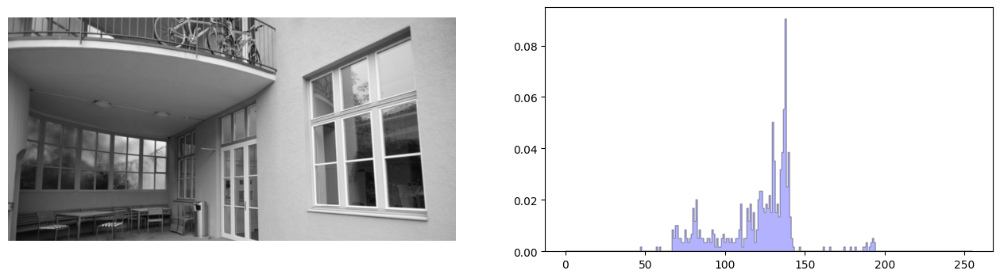
In order to properly visualize the effect of the normalization in the color histogram, we take the normalized Luminance and use it to cast back to RGB.
img_rgb_new = K.color.lab_to_rgb(torch.cat([lightness_stretched * 100.0, img_lab[:, 1:]], dim=1))
histogram_img(img_rgb_new[plot_indices])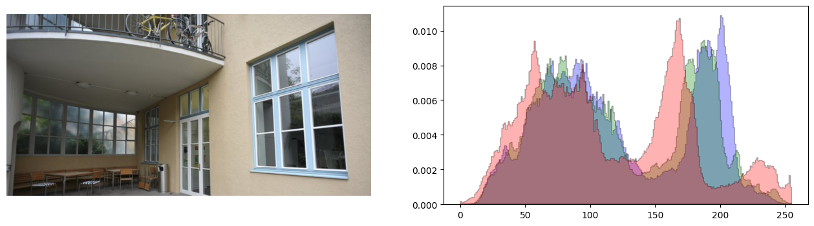
on the RGB with Kornia
In this case we normalize each channel independently where we can see that resulting image is not as clear as the one only stretching the Luminance.
rgb_stretched = K.enhance.normalize_min_max(img_rgb)
histogram_img(rgb_stretched[plot_indices])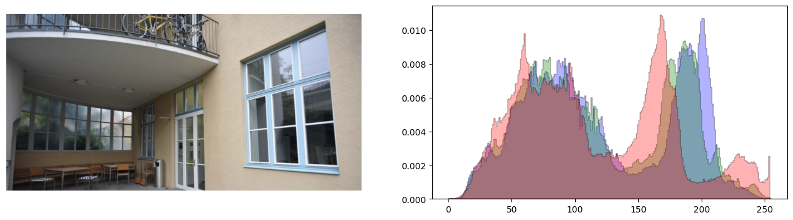
Histogram Equalization
A more advanced technique to improve the pixel distribution is the so called Histogram equalization - a method in image processing of contrast adjustment using the image’s histogram [Read more - Wikipedia].
In kornia we have implemented in terms of torch tensor to equalize the images in batch and the gpu very easily.
on the lightness with Kornia
lightness_equalized = K.enhance.equalize(lightness)
histogram_img(lightness_equalized[plot_indices])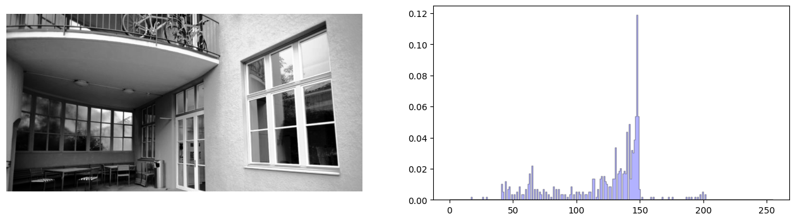
We convert back from Lab to RGB using the equalized Luminance and visualize the histogram of the RGB.
img_rgb_new = K.color.lab_to_rgb(torch.cat([lightness_equalized * 100.0, img_lab[:, 1:]], dim=1))
histogram_img(img_rgb_new[plot_indices])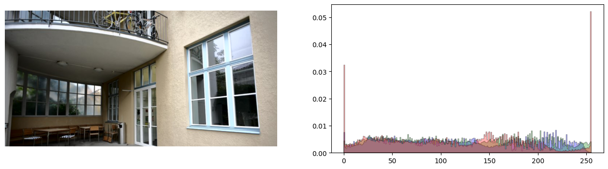
on the RGB with Kornia
rgb_equalized = K.enhance.equalize(img_rgb)
histogram_img(rgb_equalized[plot_indices])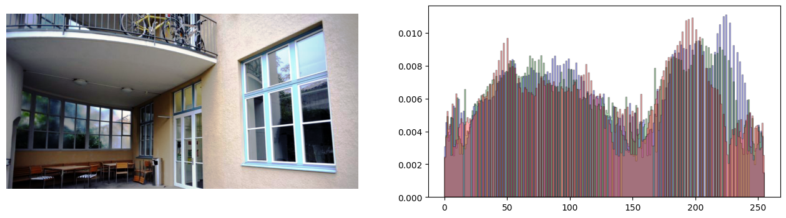
on the RGB with OpenCV
Just to compare against OpenCV - close results :)
rgb_equalized_cv = []
for img in img_rgb:
equ00 = torch.tensor(cv2.equalizeHist(K.utils.tensor_to_image(img[0].mul(255).clamp(0, 255).byte())))
equ01 = torch.tensor(cv2.equalizeHist(K.utils.tensor_to_image(img[1].mul(255).clamp(0, 255).byte())))
equ02 = torch.tensor(cv2.equalizeHist(K.utils.tensor_to_image(img[2].mul(255).clamp(0, 255).byte())))
rgb_equalized_cv.append(torch.stack([equ00, equ01, equ02]))
rgb_equalized_cv = torch.stack(rgb_equalized_cv)
histogram_img(rgb_equalized_cv[plot_indices] / 255.0)Adaptive Histogram Equalization
Adaptive histogram equalization (AHE) is a computer image processing technique used to improve contrast in images. It differs from ordinary histogram equalization in the respect that the adaptive method computes several histograms, each corresponding to a distinct section of the image, and uses them to redistribute the lightness values of the image. It is therefore suitable for improving the local contrast and enhancing the definitions of edges in each region of an image [Read more - Wikipedia].
on the lightness with Kornia
We will use kornia.enhance.equalize_clahe and by playing with the clip_limit and grid_size variables to produce different effects to the image.
lightness_equalized = K.enhance.equalize_clahe(lightness, clip_limit=0.0)
histogram_img(lightness_equalized[plot_indices])
We convert back from Lab to RGB using the equalized Luminance and visualize the histogram of the RGB.
img_rgb_new = K.color.lab_to_rgb(torch.cat([lightness_equalized * 100.0, img_lab[:, 1:]], dim=1))
histogram_img(img_rgb_new[plot_indices])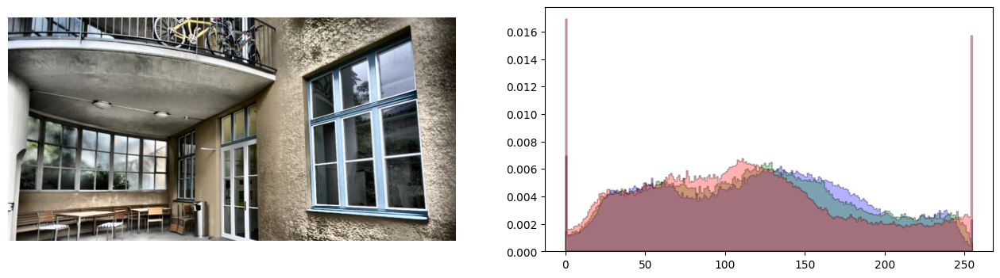
on the RGB with Kornia
rgb_equalized = K.enhance.equalize_clahe(img_rgb, clip_limit=0.0)
histogram_img(rgb_equalized[plot_indices])Contrast Limited Adaptive Histogram Equalization (CLAHE)
An improvement of the algorithm is CLAHE that divides the image into small blocks and controlled by the variable grid_size. This means, that the equalization is performed locally in each of the NxM sublocks to obtain a better distribution of the pixel values.
on the lightness with Kornia
lightness_equalized = K.enhance.equalize_clahe(lightness, clip_limit=20.0, grid_size=(8, 8))
histogram_img(lightness_equalized[plot_indices])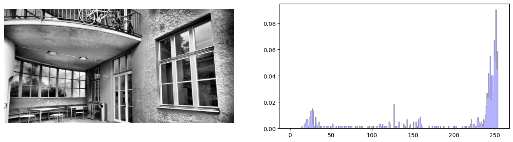
We convert back from Lab to RGB using the equalized Luminance and visualize the histogram of the RGB.
img_rgb_new = K.color.lab_to_rgb(torch.cat([lightness_equalized * 100.0, img_lab[:, 1:]], dim=1))
histogram_img(img_rgb_new[plot_indices])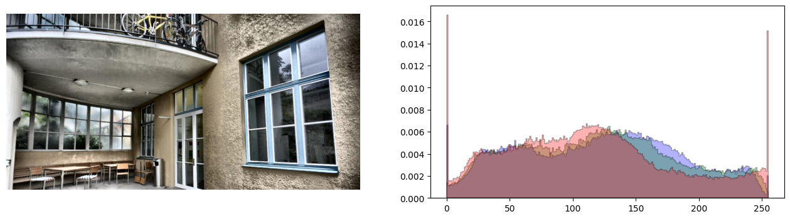
on the RGB with Kornia
We directly equalize all the RGB channels at once
rgb_equalized = K.enhance.equalize_clahe(img_rgb, clip_limit=20.0, grid_size=(8, 8))
histogram_img(rgb_equalized[plot_indices])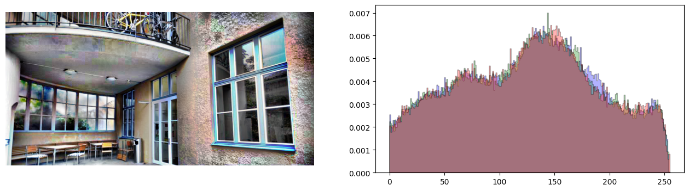
on the RGB with OpenCV
imgs = []
clahe = cv2.createCLAHE(clipLimit=20.0, tileGridSize=(8, 8))
for im in img_rgb:
# equalize channels independently as gray scale images
equ00 = torch.tensor(clahe.apply(K.utils.tensor_to_image(im[0].mul(255).clamp(0, 255).byte())))
equ01 = torch.tensor(clahe.apply(K.utils.tensor_to_image(im[1].mul(255).clamp(0, 255).byte())))
equ02 = torch.tensor(clahe.apply(K.utils.tensor_to_image(im[2].mul(255).clamp(0, 255).byte())))
imgs.append(torch.stack([equ00, equ01, equ02]))
imgs = torch.stack(imgs)
histogram_img(imgs[plot_indices] / 255.0)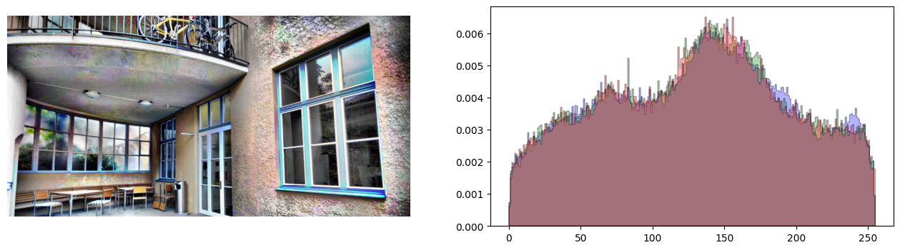